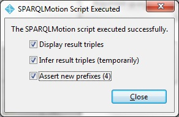
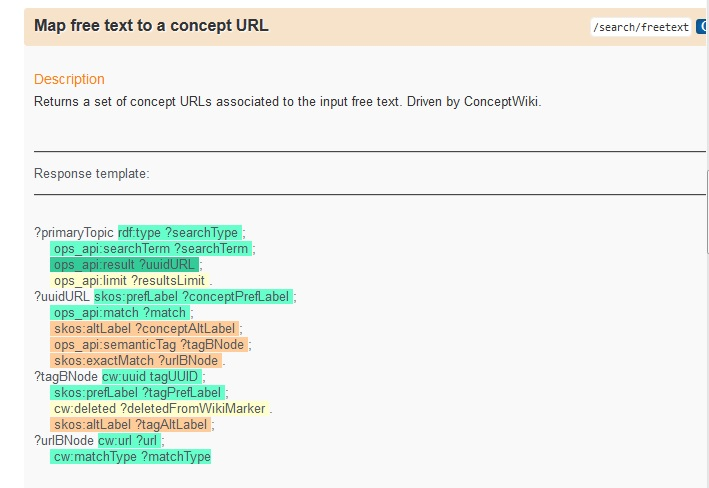
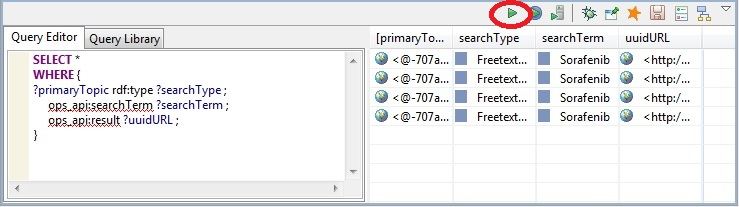

Querying the API results
Saving the results
Presuming that your internet connection is working and your connecton to the OpenPHACTS API is working, you will get a result from your service call, in the form of a set of RDF triples. TopBraid gives you some options about what to do with these results. For this tutorial, choose all three, i.e., Display triples, Infer triples, and add namespaces (this last option might not be available if you run the script multiple times).

Once you have inferred the triples, they are availble for SPARQL query. You can copy your query directly from the OpenPHACTS documentation page, from the section on search-freetext.

For example, copy the first three lines and past them to replace the "WHERE" clause in the SPARQL tab in TopBraid Composer. Click the "Run" arrow (highlighted here in RED) and see the results:

Next: Taking the next step in your script